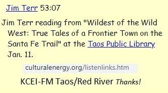
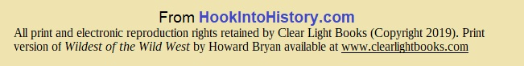

PRESS:
KRQE Ch. 13 / Albuquerque
Taos News
Santa Fe New Mexican
Albuquerque Journal North
FINALLY an audiobook
version of
this best-selling book,
WILDEST OF THE WILD WEST by Howard Bryan,
about the incredibly violent and lawless past of Las Vegas, New
Mexico.

(The Las Vegas referred to in the popular
poster above is not the gambling
spot in Nevada, but the original,
the subject of our story, Las Vegas, NEW MEXICO!)
“Fascinating
story, made all the more interesting by the
clear and warm voice of
the narrator.”
-Dr. Earl Babbie, Ph. D
“The writing is
superb, and Terr brings its beauty to life;
he is somehow just right
for it” -Byron Callas

Retail locations:
LAS VEGAS, NM:
Paper Trail; Books of the Southwest on the Plaza & Roughrider Antiques (469-0517);
Tome on the Range; Plaza
and Castanada Hotel gift shops.
ALBUQUERQUE: Treasure House Books &
Gifts (Old Town Plaza)
SANTA FE: Garcia St. Books; Collected Works;
Op.Cit.
TAOS, NM: Op.Cit. LAS CRUCES, NM Coas Books
Libraries: Santa Fe main;
Taos: main; Las Vegas Carnegie, NM Highlands U.
Five CDs, 5 1/2 hours total
If you would like it autographed by narrator, please specify TO WHOM.
(Autographed copies not shrink-wrapped)
DIGITAL DOWNLOAD ($14.95) (SUGGEST MAJOR OUTLETS ABOVE, INSTEAD)
Download instructions will be emailed within 24 hours, usually within one hour
Click box below then follow download link to hear this:

See
press releases
(From the original book jacket)
The “Wild West”
stories of Dodge City, Deadwood, and Tombstone pale in comparison to the
incredible story of Las Vegas, New Mexico, for decades considered the
most violent community on America’s Western frontier.
In
Wildest of the Wild West,
popular Western historian Howard Bryan provides a spirited account of
the violent, melodramatic, and often bizarre events that centered in and
around this small Hispanic farm and ranching community from 1835 to
1915.
SHORTER AUDIO SAMPLES
"Benedict-Lincoln"
"Three Guys Hanged"
From
Amazon 5-star
reviews of the book:
“This
book is one of the lost treasures of the southwest, written from
recollections of the actual pioneers who lived their
stories.
I would recommend this and other books by this
author
for anyone who seriously wants to know what the REAL
west was like.”
“Western
History as it really was.”
“Excellent
book on the early history of the wildest town in the New Mexico
Territory!
Wonderful for reading as well as research! Highly
recommended!”
“It's
all true. In fact, it's understated...Most people find it hard
to believe such a tough town could stay
that way for as long
as Las Vegas NEW MEXICO did. The original Las Vegas was
established a
undred years before Bugsy Siegel the mobster
started his air-conditioned, neon-lit palace for city
dudes,
hundreds of miles away, in the Nevada desert... I recommend the
book with great enthusiasm.”
“This
is a must-read especially for those fascinated with the history
of the American West.”
“This
is a very easy reading book, with some of the most compelling
short stories (true short
stories) of the Las Vegas, New
Mexico area, during the 1800 and very early 1900s. You pick up
some amazing historical facts... and hear some tales of famous,
or infamous characters that
simply amaze!”
_______________
"Jerked to Jesus"
"Benedict Condemns"
"No Accident"
In the news recently, and discussed in this audio book


_________________
OUR MISSION:
Making history "come alive";
hastening
that moment when young people realize there
WAS history here

From Amazon 5-star reviews of the book:
“This book is one of the lost treasures of the southwest, written from
recollections of the actual pioneers who lived their stories.
I would recommend this and other books by this author
for anyone who seriously wants to know what the REAL west was like.”
“Western History as it really was.”
“Excellent
book on the early history of the wildest town in the New Mexico
Territory!
Wonderful for reading as well as research! Highly
recommended!”
“It's
all true. In fact, it's understated...Most people find it hard
to believe such a tough town could stay
that way for as long
as Las Vegas NEW MEXICO did. The original Las Vegas was
established a
undred years before Bugsy Siegel the mobster
started his air-conditioned, neon-lit palace for city
dudes,
hundreds of miles away, in the Nevada desert... I recommend the
book with great enthusiasm.”
“This is a must-read especially for those fascinated with the history of the American West.”
“This
is a very easy reading book, with some of the most compelling
short stories (true short
stories) of the Las Vegas, New
Mexico area, during the 1800 and very early 1900s. You pick up
some amazing historical facts... and hear some tales of famous,
or infamous characters that
simply amaze!”
_______________



All contents of this page (c) copyright - All rights reserved
CONTACT
TOPICS / INDEX / SEARCH
Wildest of the Wild West by Howard Bryan
True Tales of a Frontier
Town on the Santa Fe Trail
Abraham Abulafie
Abraham Lincoln
Alexander Barclay
Alexander Grzelachowski
Ann Dunn White
Antonio Abad Herrera
Antonio Jose Valdez
Antonio Lino Valdez
Antonio Lopez
Apache
Archie Cummings
Archie McLaughlin
Arthur L Morrison
Atchison, Topeka and Santa Fe Railroad
Baca’s Folly
Bank Saloon
Barclay's Fort
Barney Mason
Battle of Glorieta Pass
Beckworth hanged
Belle Siddons (Monte Verde)
Benigno Romero
Benjamin Stoop
Billy Green
Billy Wilson
Billy the Kid
Black Jack
Boone May
Bosque Redondo
Buffalo Hall
Bull Shit Jack
California Volunteers
Capt. Henry R Judd
Capt. James "Paddy" Graydon
Capt. José Santos Esquivel
Cattle industry
Cecilio Lucero
Charles A. Blanchard
Charles Ilfeld
Charles Jones
Charley Coombs
Charlie Bowdre
Chief Chino
Chief Lobo Blanco
Civil War in New Mexico
Cleofas Romero
Close and Patterson dance hall
Col. Albert J Fountain
Col. Christopher Kit Carson
Col. Sterling Price
Col. Theodore Roosevelt
Comanche
Coyote NM
Cyrus Mather
Dan Miller
Dave Rudabaugh
David Barnes
David Mather
Dick Liddil
Dodge City Gang
Dr. J. M Whitlock
Dr. Newt Hallet
Dutch Henry
Dutchy
Edward M Kelly
Edward O’Kelley
El Ermitano
El Ermitano (The Hermit)
El Moro
El Paso
Elijio Perea
Emanuel Rosenwald
Emilio Ensinias
Emma Silva
Eugene Holman
Eugenio Alarid
Eugenio Romero
Exchange Hotel
Feliciano Chavez
Fireman Jim Flynn Pueblo
Flat Nosed One (Ricardo Romero)
Flor de la Pena
Flor de la Pena
Florentino Medrán
Flores Saloon
Fort Sumner
Fort Union
Francis X. Aubry
Francisco Chacôn
Francisco Romero
Francisco Tafoya (Navajo Frank)
Frank Cady
Frank Hendrickson
Frank Stewart
Frog Legs (Antonio Jose Valdez)
G W Cole
Gabriel Sandoval
Gallardo
Gallinas River
Gallinas River
Gen. James H Carleton
Gen. Stephen Watts Kearny
Genovevo Avila
George Davidson
George Davis
Giovanni Maria Agostini (The Hermit)
Goodlet and Roberts Saloon
Gov. Charles Bent
Gov. Henry Connelly
Gov. Lew Wallace
Gov. Manuel Armijo
Gov. William C McDonald
Gov. William T Thornton
Guadalupe Caballero
Hanging Windmill
Hangings in Las Vegas NM
Henry F Hoyt
Henry McCarty
Herman Maestas
Hermit’s Peak
History of Las Vegas NM
Hoodoo Brown
Hueco Mountain
Hyman C Neill
Hyman G Neill
Imperial saloon
Indian raids
J H Strahan
J J Harlem
J. J. Marlin
Jack Davis
Jack Johnson
Jack Lyons
Jacob Stutzman
James Allen
James Clay
James Morehead
James West
Jesse James
Jesse James
Jesus Morales
Jesús Maria Martinez
Jesús Vialpando
Joe Carson
Joe Castello
John "Dutchy” Schunderberger
John Clark
John Daugherty
John Dorsey
John Forsha
John H. Watts
John H. “Doc "Holliday
John Joshua Webb
John Little Jack Llewellyn
John Llewellyn
John MacPherson
John Murray
John Pierce
John S. Chisum
Jordan L. Webb
Joseph E Gary
Joseph Martin
Joseph and William Stokes
Josiah Gregg
Josiah Mather
Josiah Mather
José Chàvez y Chàvez
Juan Jose Herrera
Juan Miguel Martin
Juan de Dios Maese
Judge Kirby Benedict
Judge Thomas Smith
Julian Trujillo
K.P. Brown
Kirk Gordon
Las Gorras Blancas
Levi J Kiethley
Librado Polanco
Lincoln County War
Little Allen
Lonesome Dave
Lorenzo Lopez
Los Alamos NM
Louis Hommel
Lt. Ambrose E Burnside
Lt. David Bell
Lt. Robert R Brown
Lt. Updyke
Lubin Film Company
Lucien B. Maxwell
Madame Vestal
Maj. Benjamin B Edmonson
Maj. William N Grier
Manuel Barela
Manuel Cortez
Manuel Gonzales y Baca
Manuel Romero
Marguerita Inez
Martin Gonzales y Blea
Martin Gonzales y Blea
Max Evans
Maximiliano Martinez
Mesilla
Michael Kelliher
Miguel A Otero
Mike Gordon
Mike Rourke gang
Military post at Las Vegas NM
Monte Verde
Monte Verde
Montezuma Hotel
Mora
Morris Kelliher
Moses Goldstein
Mr. and Mrs B. H Hunter
Mrs. Abbott
Mrs. Carson
Mrs. Updyke
Mysterious Dave
Navajo Frank
Navajos
Newspapers in Las Vegas NM
Nicanor Herrera
Nuestra Seňora de los Dolores de Las Vegas
Off Wheeler
Organ Mountains
Our Lady of Sorrows of the Meadows
Owl Peak
Pablo Herrera
Patricio Maes
Patrick F Garrett
Paula Angel
Pecos River
Pedro Romero
Pettifogger
Plaza Hotel
Pock-Marked Kid (William Mullen)
Puerto de Luna
Railroad in Las Vegas, NM
Rainsville NM
Ralph Emerson Twitchell
Refugio Esquivel
Ricardo Gonzales
Ricardo Romero
Robert “Bob” Ford
Romaine Fielding
Rosa Duran
Rosario Lucero
Sabinoso
San Miguel del Bado
Sangre de Cristo Mountains
Santa Fe
Santa Fe Trail
Sawdust Charlie
Sen. Edmund G Ross
Sheriff Pat Garrett
Sheriff W. B. "Bat" Masterson
Slap Jack Bill (William Nicholson), William
Society of Bandits of New Mexico
St. Nicholas Hotel
Stagecoach and train Robberies
Star Fort
Taos
Taos NM
Taos Rebellion
Tecolote
Tecolote Peak
Teddy Roosevelt
Telesfora de Sandoval (Mrs. Silva)
The Adobe House
The Dull One (Manuel Gonzales y Baca)
The Hermit
The Owl (Guadalupe Caballero)
The Parlor
The Shrunken One (Genovevo Avila)
Thomas B. Catron
Thomas Howard
Toe Jam Saloon
Tom Henry
Tom Mix
Tom Nixon
Tom Pickett
Tomas Lucero
U. S. takeover of Las Vegas NM
Vicente Silva
Vigilantes
Virginia Ford
Virginia White
W. Scott Moore
Wagon Mound NM
Watrous NM
White Caps (Las Gorras Blancas)
William Brady
William Brickley
William Clancy
William F. M Arny,
William H. Bonney
William Hedges
William L Goodlet
William Morgan
William Mullen
William Nicholson
William Randall
Wood Hite
Wyatt Earp